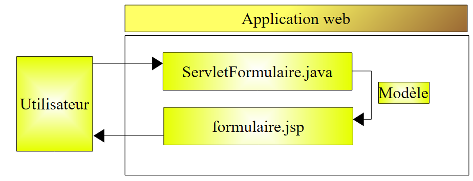

4. MVC（模型–视图–控制器）开发
Web 应用程序通常采用三层架构：

- [DAO] 层负责数据访问，通常处理数据库管理系统（DBMS）中的持久化数据。但这也可能是来自传感器、网络等来源的数据。
- [业务]层实现应用程序的“业务”算法。该层与任何形式的用户界面均相互独立。因此，它必须能够适配控制台界面、Web界面或富客户端界面。因此，它必须能够在Web界面之外进行测试，特别是通过控制台界面进行测试。这通常是架构中最稳定的层。 即使用户界面或应用程序运行所需数据的访问方式发生改变，该层也不会随之改变。
- [用户界面]层，即允许用户控制应用程序并从中获取信息的界面（通常为图形界面）。
通信流向从左至右：
- 用户向[用户界面]层发出请求
- 该请求由[用户界面]层进行格式化处理，并传输至[业务逻辑]层
- 如果[业务逻辑]层需要数据来处理此请求，它会向[DAO]层请求数据
- 每个被查询的层将响应返回给其左侧的层，直至最终响应到达用户。
通常通过 Java 接口访问 [业务] 和 [DAO] 层。因此，[业务] 层仅了解 [DAO] 层的接口，而不知道实现这些接口的具体类。 这正是确保各层之间相互独立的关键：只要 [DAO] 层的接口定义保持不变，更改 [DAO] 层的实现就不会对 [业务] 层产生影响。[用户界面] 层与 [业务] 层之间也是如此。
当[用户界面]层为Web界面时，MVC（模型-视图-控制器）架构即在该层中实现：

处理客户端请求的步骤如下：
- 客户端向控制器发送请求。控制器负责处理所有客户端请求。它是应用程序的入口点，即 MVC 架构中的 C。
- C控制器处理此请求。为此，它可能需要业务层的协助。一旦客户端请求被处理完毕，它便会触发各种响应。一个典型的例子是：
- 若请求无法正确处理，则显示错误页面
- 否则返回确认页面
- 控制器负责选择要发送给客户端的响应（即视图）。选择响应涉及以下几个步骤：
- 选择将生成响应的对象。这被称为视图（V），即 MVC 中的 V。该选择通常取决于执行用户请求的操作所产生的结果。
- 向其提供生成此响应所需的数据。事实上，该响应通常包含由控制器计算得出的信息。这些信息构成了所谓的视图的 M 模型，即 MVC 中的 M。
- 因此，步骤 3 包括选择一个视图 (V) 并构建其所需的模型 (M)。
- 控制器 C 会指示所选视图进行渲染。这通常涉及调用视图 V 中负责生成客户端响应的特定方法。在本文中，我们将生成客户端响应的对象及其响应本身统称为视图。MVC 文献对此点并未明确说明。如果将响应本身称为视图，那么我们可以将生成该响应的对象称为视图生成器。
- 视图生成器 V 使用控制器 C 准备的模型 M 来初始化其必须发送给客户端的响应中的动态部分。
- 响应被发送给客户端。其具体形式取决于视图生成器，可以是 HTML 流、PDF、Excel 等格式。
MVC Web 开发方法论并不一定需要外部工具。因此，仅使用简单的 JDK 和基础 Web 开发库，即可开发出采用 MVC 架构的 Java Web 应用程序。适用于简单应用程序的方法如下：
- 控制器由单个 Servlet 处理。这就是 MVC 中的 C。
- 所有客户端请求都包含一个“action”属性，例如 (http://.../appli?action=liste)。
- 根据 action 属性的值，Servlet 会调用类型为 [doAction(...)] 的内部方法。
- [doAction]方法执行用户请求的操作。为此，它会在必要时调用[业务]层。
- 根据执行结果，[doAction]方法决定显示哪个JSP页面。这就是MVC模型中的视图（V）。
- JSP 页面包含必须由 Servlet 提供的动态元素。[doAction] 方法将提供这些元素。这就是视图模型，即 MVC 中的 M。该模型通常放置在请求上下文中（request.setAttribute("key", "value"），较少见的是放置在会话或应用程序上下文中。JSP 页面可以访问这三个上下文。
- [doAction] 方法通过将执行流程传递给选定的 JSP 页面来渲染视图。为此，它会使用类似 [getServletContext() .getRequestDispatcher("JSP 页面").forward(request, response)] 之类的语句。
这种 MVC 设计模式被称为“前端控制器”模式或单控制器模式。一个 Servlet 负责处理来自所有用户的请求。
让我们回到前一个 Web 应用程序的架构：

该架构对应于以下多层架构：

实际上只有一层：Web 接口层。一般而言，基于 Servlet 和 JSP 页面的 MVC Web 应用程序将具有以下架构：

对于简单的应用程序，这种架构已经足够。当你编写过几个此类应用程序后，你会发现两个不同应用程序的Servlet：
- 使用相同的机制来确定应执行哪个 [doAction] 方法来处理用户请求的操作
- 实际上仅在这些 [doAction] 方法的内容上有所不同
此时，人们往往会产生强烈的冲动：
- 将处理逻辑 (1) 提取到一个通用的 Servlet 中，该 Servlet 并不了解使用它的具体应用程序
- 将处理（2）委托给外部类，因为通用 Servlet 并不知道它正在哪个应用程序中被使用
- 通过配置文件将用户请求的操作与必须处理该操作的类关联起来
为此，一些通常被称为“框架”的工具应运而生，旨在为开发人员提供这些功能。其中历史最悠久且可能最广为人知的是 Struts（http://struts.apache.org/）。Jakarta Struts 是 Apache 软件基金会（www.apache.org）的一个项目。该框架的详细介绍见（http://tahe.developpez.com/java/struts/）。
较晚出现的 Spring 框架（http://www.springframework.org/）提供了与 Struts 类似的功能。多篇文章（http://tahe.developpez.com/java/springmvc-part1/）已对其使用方法进行了说明。
下面我们将展示一个基于Servlet和JSP页面的MVC架构示例。